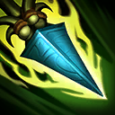
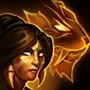

核心裝備
 巫妖之禍
巫妖之禍 死亡之帽
死亡之帽 無限寶珠
無限寶珠 虛空之杖
虛空之杖 女妖面紗
女妖面紗

以下為本站 7.2d 校正後的標準配置；實戰仍需依敵方陣容調整。


技能優先：Q > E > W
在草叢中提高跑速；人形標槍或陷阱命中會施加獵捕，揭露目標並提高追擊跑速，同時強化美洲獅形態的擊倒與猛撲。 7.2b 標記敵軍時的額外跑速調整為 10%。

人形投擲標槍，飛行距離越遠傷害越高；美洲獅形態強化下一次普攻，目標生命越低傷害越高。
人形放置會揭露並標記目標的陷阱；美洲獅形態向前跳躍造成範圍傷害，對獵捕目標距離更遠。
人形治療友軍並提高其攻速；美洲獅形態向前方揮擊造成範圍魔法傷害。

在獵人與美洲獅形態間切換；美洲獅形態會獲得額外雙防並使用另一組近戰技能。
人形1技標槍 → 4技變豹 → 豹形2技猛撲 → 豹形3技 → 豹形1技擊倒
標槍命中觸發獵捕後再變身，強化猛撲貼近，最後用擊倒吃低血斬殺加成。
人形2技陷阱 → 變豹 → 猛撲 → 揮擊 → 擊倒
陷阱標記大型野怪後，豹形猛撲距離與節奏更穩，適合快速跨營地。
遠距標槍 → 人形3技治療／攻速 → 變豹 → 猛撲 → 擊倒收尾
團戰先留在人形消耗與治療，確認目標進入斬殺線才變豹進場。
開局即能切換人形與美洲獅形態。用人形一技或二技陷阱標記野怪後，切成美洲獅以強化二技猛撲貼近，再用三技與一技完成營地。7.2b 基礎雙防下降，沒有線權或隊友支援時不要強行入侵。
利用草叢跑速與遠距標槍不斷入侵、壓低血量。標槍距離越遠傷害越高，命中獵捕後再決定是否切豹進場，沒有標記時不要勉強跳入。
正面團戰以標槍消耗與人形三技治療為主，等敵方核心降至斬殺線後才變身收割。7.2a 已削弱猛撲基礎傷害，進場判斷要更保守。
對局名單是本站依英雄機制與目前配置整理的參考，不等同固定勝率。
打野先維持標準刷野與節奏裝，只有敵方陣容或我方前排需求明顯時才調整。
觸發：敵方前排多，物件團與正面團戰會長時間卡在高生命目標上。
用百分比生命灼燒或魔法穿透提高長時間處理高血量／高魔防前排的效率。
觸發：敵方能在你進場或搶物件前快速把你秒掉。
骨甲降低接續傷害，適合換掉較貪輸出的副系符文。
觸發：進場或搶物件時經常被控制鏈直接中斷節奏。
堅毅提供韌性，受到硬控時也能短暫提高雙防。
觸發：敵方前排、鬥士或吸血核心能在物件團長時間回復。
黑魔禁書能由魔法傷害穩定施加重創，適合法師與軟輔處理大量治療。
觸發：我方陣容沒有可靠第一承傷點，團戰需要有人更早進場吸收注意力。
這隻英雄不適合為了「缺前排」硬改成主坦；維持自己的輸出／功能，讓巴龍路或輔助補前排更合理。
提醒：「缺前排」不代表所有打野都要改坦裝；刺客、法師與射手打野硬轉坦通常會失去英雄價值。
7.2b 平衡更新（v79.4）：基礎物防 46→37、基礎魔防 40→36，被動標記追擊跑速 15%→10%；入侵、生存與追擊能力下修。｜7.2a 打野正式版：技能名稱依 Riot Games 台灣《激鬥峽谷》奈德麗英雄頁校正；巫妖之禍、死亡之帽與技能順序交叉參考 WildRiftFire 7.2a，並納入 7.2a 猛撲傷害與美洲獅雙防魔攻加成下修。Tier 與對局為本站綜合評級。｜v54：完成打野第三批正式版，完整套用李星固定母版，補齊起手裝、核心三件、五件成裝、技能加點、三組連招、對局與前中後期節奏。
本站於 2026-08-27 依 Patch 7.2d 重新檢查此配置。 Tier、出裝、符文與對局屬於 Wild Rift Guide 的整理與分析，不是 Riot Games 官方推薦；版本改動後會再依官方公告與實戰資料校正。